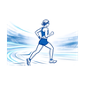

<nav class="site-nav" aria-label="Main navigation">
  <div class="brand">
    <a href="index.html" class="brand-mark" aria-label="Run Tianjin home">
      
      <span>Run Tianjin</span>
    </a>
  </div>
  <div class="nav-links">
    <a href="index.html">Home</a>
    <a href="routes.html">Routes</a>
    <a href="map.html">Map</a>
    <a href="tips.html">Tips</a>
    <a href="about.html">About</a>
  </div>
  <button class="theme-toggle" type="button" data-theme-toggle aria-pressed="false" aria-label="Switch to dark theme" title="Switch to dark theme">
    <span class="theme-toggle-icon" aria-hidden="true">☾</span>
  </button>
</nav>